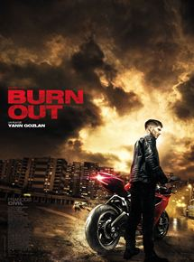

Gladiator
Date de sortie
20 juin 2000 (2h35min)
Réalisateur
Ridley Scott
Avec
Russell Crowe, Joaquin Phoenixplus
Presse
Le général romain Maximus est le plus fidèle soutien de l'empereur Marc Aurèle, qu'il a conduit de victoire en victoire avec une bravoure et un dévouement exemplaires. Jaloux du prestige..
Indiana Jones et la Dernière Croisade
Date de sortie
18 octobre 1989 (2h7min)
Réalisateur
Steven Spielberg
Avec
Harrison Ford, Sean Conneryplus
Presse
L'archéologue aventurier Indiana Jones se retrouve aux prises avec un maléfique milliardaire. Aux côtés de la cupide Elsa et de son père, il part à la recherche du Graal.
The Dark Knight Rises
Date de sortie
25 juillet 2012 (2h44min)
Réalisateur
Christopher Nolan
Avec
Christian Bale, Gary Oldman
Presse
Il y a huit ans, Batman a disparu dans la nuit : lui qui était un héros est alors devenu un fugitif.
S'accusant de la mort du procureur-adjoint Harvey Dent, le Chevalier Noir a tout sacrifié au nom de ce que le commissaire Gordon et lui-même considéraient être une noble cause.
Et leurs actions conjointes se sont avérées efficaces pour un temps puisque la criminalité a été éradiquée à Gotham City grâce à l'arsenal de lois répressif initié par Dent.
Mais c'est un chat – aux intentions obscures – aussi rusé que voleur qui va tout bouleverser.
À moins que ce ne soit l'arrivée à Gotham de Bane, terroriste masqué, qui compte bien arracher Bruce à l'exil qu'il s'est imposé.
Pourtant, même si ce dernier est prêt à endosser de nouveau la cape et le casque du Chevalier Noir, Batman n'est peut-être plus de taille à affronter Bane…
Matrix
Date de sortie
23 juin 1999 (2h15min)
Réalisateurs
Lana Wachowski, Lilly Wachowski
Avec
Keanu Reeves, Laurence Fishburne
Presse
Programmeur anonyme, Thomas Anderson est aussi l'un des pirates les plus recherchés du cyber-space. Il est contacté par un certain Morpheus.
Ensemble, ils se lancent dans une lutte sans retour contre la Matrice et ses terribles agents...
Scarface
Date de sortie
7 mars 1984 (2h45min)
Réalisateur
Brian de palma
Avec
Al Pacino, Michelle Pfeiffer
Presse
En 1980, Tony Montana bénéficie d'une amnistie du gouvernement cubain pour retourner en Floride. Ambitieux et sans scrupules, il élabore un plan pour éliminer un caïd de la pègre et prendre la place qu'il occupait sur le marché de la drogue.